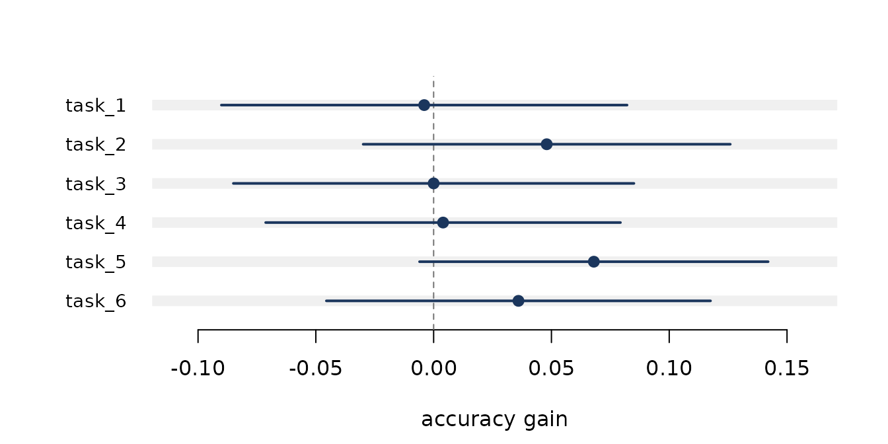

An evaluation is an experiment. It draws a sample of questions from the much larger set of questions someone could have written, runs a model on them, and reports a mean. Like any experiment it has a standard error, and like any experiment it can be too small to answer the question it was built to answer.
This vignette walks through the workflow on a simulated reading comprehension evaluation: 50 passages, 8 questions each, two models.
Building the evaluation object
Passages differ in difficulty, and every question about a passage inherits that difficulty. This is what makes the questions dependent.
passage_difficulty <- rnorm(50, 0, 1.3)
item_difficulty <- rep(passage_difficulty, each = 8) + rnorm(400, 0, 0.4)
skill <- c(new = 0.95, old = 0.72)
results <- do.call(rbind, lapply(names(skill), function(m) {
data.frame(
q = 1:400,
passage = rep(1:50, each = 8),
model = m,
correct = rbinom(400, 1, plogis(skill[[m]] - item_difficulty))
)
}))
e <- as_eval(results, score = correct, item = q, model = model,
cluster = passage)
e
#> <evaluatellm_eval>
#> rows 800
#> items 400
#> models 2 (new, old)
#> clusters 50Declaring cluster is the single most consequential
argument in the package. Everything downstream uses it.
Scoring one model
ev_score(e, "new")
#>
#> Evaluation score: new
#>
#> Estimate 0.6950
#> Std. error 0.0401
#> 95% CI [0.6144, 0.7756]
#>
#> Items 400
#> Clusters 50
#> Design eff 3.03 (SE is 1.74x the independent estimate)
#> Cluster-robust standard error, t on 49 df.The design effect says the cluster-robust standard error is three times the variance of the naive one. Turning the cluster correction off shows what would otherwise have been reported:
ev_score(e, "new", cluster = FALSE)
#>
#> Evaluation score: new
#>
#> Estimate 0.6950
#> Std. error 0.0230
#> 95% CI [0.6497, 0.7403]
#>
#> Items 400
#> Independent standard error, t on 399 df.Same estimate, an interval roughly 40 per cent too narrow.
ev_cluster() breaks this down further, and
ev_icc() returns the intra-cluster correlation on its own,
which is what you need to plan the next evaluation.
ev_icc(e, "new")
#> [1] 0.287668
#> attr(,"raw")
#> [1] 0.287668Comparing two models
Both models answered the same questions, so the comparison should be paired.
ev_paired(e, model_a = "new", model_b = "old")
#>
#> Paired comparison: new vs old
#>
#> new 0.6950
#> old 0.6350
#>
#> Difference 0.0600 [-0.0035, 0.1235] (p = 0.063)
#> Std. error 0.0316 (cluster-robust, 50 clusters)
#> t = 1.899 on 49 df
#>
#> Items 400
#> Correlation 0.163
#> Pairing cut the variance by 1.1x versus an unpaired comparison
#> (unpaired SE would be 0.0333).Two things are worth reading here. The correlation between the models’ item scores drives the variance reduction from pairing: the more alike the models, the more pairing buys. And the difference is far less affected by clustering than the level was, because taking the difference has already removed the passage difficulty both models faced.
For models run on different question sets, ev_unpaired()
gives a Welch interval, at a real cost in power.
Sizing an evaluation before running it
Run this first, not last.
ev_mde(n_items = 400, p_a = 0.72, p_b = 0.70, correlation = 0.7,
icc = 0.25, cluster_size = 8)
#>
#> Minimum detectable effect
#>
#> MDE 0.0816
#>
#> Questions 400 (effective 145)
#> SD of diff 0.3515 (binary scores)
#> Power 80%
#> Alpha 0.05 two-sided
#> Design effect 2.75
#>
#> A true difference below 0.0816 will usually be missed.Four hundred clustered questions cannot resolve a two point gap. A null result from this evaluation would say nothing about the models. To find the size that would work:
ev_power(delta = 0.02, p_a = 0.72, p_b = 0.70, correlation = 0.7,
icc = 0.25, cluster_size = 8)
#>
#> Evaluation size required
#>
#> Questions 6667
#> Clusters 834 of 8
#>
#> To detect 0.0200
#> SD of diff 0.3515 (binary scores)
#> Power 80%
#> Alpha 0.05 two-sided
#> Design effect 2.75 (ICC 0.25, 8 per cluster)
#>
#> Clustering costs 4243 extra questions.The best source for sd_diff is a pilot run passed back
through pilot =.
Several responses per question
Sampling k responses per question splits the observed
spread into genuine variation between questions and noise in the model’s
own sampling.
p_i <- plogis(rnorm(200, 0.7, 1.1))
rep_d <- data.frame(
q = rep(1:200, each = 6),
draw = rep(1:6, times = 200),
s = rbinom(1200, 1, rep(p_i, each = 6))
)
ev_resample(as_eval(rep_d, score = s, item = q, sample = draw))
#>
#> Repeated-sampling variance decomposition: model
#>
#> Estimate 0.6825
#> Std. error 0.0193
#> 95% CI [0.6444, 0.7206]
#>
#> Items 200
#> Responses 1200 (mean k = 6.0)
#>
#> Var between 0.0462
#> Var within 0.171
#> Share of observed spread that is sampling noise: 38%
#>
#> Projected standard error by responses per item:
#>
#> k = 1 SE 0.0329 (200 responses)
#> k = 2 SE 0.0257 (400 responses)
#> k = 4 SE 0.0211 (800 responses)
#> k = 8 SE 0.0184 (1600 responses)
#> k = 16 SE 0.0169 (3200 responses)
#> k = Inf SE 0.0152 (floor)
#>
#> More responses per item cannot beat SE 0.0152.
#> Going below that requires more items.The projection table is the useful part: more responses per question buys precision only against the within-question term, and there is a floor no amount of resampling can beat. Getting below it means writing more questions.
Evaluations graded by a model judge
A judge is cheap and biased. Bias does not shrink as you grade more items, so measure it first.
truth <- rbinom(500, 1, 0.55)
judge_pilot <- truth
judge_pilot[truth == 0] <- rbinom(sum(truth == 0), 1, 0.35)
ev_judge_agreement(judge_pilot, truth)
#>
#> Judge agreement (binary, n = 500)
#>
#> Mean judge 0.6820
#> Mean human 0.5460
#>
#> Agreement 0.864 [0.831, 0.891]
#> Kappa 0.719 [0.659, 0.778]
#> Sensitivity 1.000
#> Specificity 0.700
#> Correlation 0.749
#>
#> Bias 0.1360 [0.1059, 0.1661] (p < 0.001)
#> McNemar chi-sq 66.01 (p < 0.001)
#> judge higher on 68 items, lower on 0
#>
#> The judge is systematically generous. Every score it grades inherits this.
#> Correct it with ev_judge_debias() rather than reprompting.Read the kappa rather than the raw agreement, and take the McNemar test seriously: a judge whose errors run one way is putting that error into every score it grades.
The fix is not a better prompt. Grade everything with the judge, label a random subset by hand, and combine them.
n_total <- 5000
truth_all <- rbinom(n_total, 1, 0.62)
judge <- ifelse(runif(n_total) < 0.87, truth_all, 1 - truth_all)
judge[truth_all == 0 & runif(n_total) < 0.15] <- 1
gold <- rep(NA_real_, n_total)
labelled <- sample(n_total, 250)
gold[labelled] <- truth_all[labelled]
ev_judge_debias(judge, gold)
#>
#> Prediction-powered evaluation score
#>
#> Estimate 0.6055 [0.5644, 0.6465]
#> Std. error 0.0209
#>
#> For comparison:
#> humans only 0.6200 (SE 0.0308)
#> judge only 0.6290 (biased by 0.0280)
#>
#> Items 5000 judged, 250 human-labelled
#> Lambda 0.726 (tuned)
#> Correlation 0.752
#>
#> Your 250 human labels carry the precision of 539.The estimator is unbiased for any tuning constant, so no assumption about judge quality is being smuggled in, and the default tuning guarantees it is never less precise than ignoring the judge entirely. To size the labelling budget in advance:
ev_judge_power(n_total = 20000, correlation = 0.8, target_se = 0.01)
#>
#> Human labels required
#>
#> Human labels 979
#> Without a judge 2500
#> Saving 61%
#>
#> Target SE 0.0100
#> Achieved SE 0.0100
#> Judge-scored 20000
#> Correlation 0.80
#> Lambda 0.761Suites and leaderboards
Reporting the tasks a model won, out of the tasks it was tried on,
needs a multiplicity adjustment. ev_multi() applies one,
pools the tasks by inverse variance, and tests whether they are telling
the same story.
suite <- lapply(1:6, function(i) {
a <- rbinom(250, 1, 0.72)
b <- rbinom(250, 1, 0.68)
d <- data.frame(q = rep(1:250, 2), m = rep(c("new", "old"), each = 250),
s = c(a, b))
ev_paired(as_eval(d, score = s, item = q, model = m), "new", "old")
})
names(suite) <- paste0("task_", 1:6)
ev_multi(suite)
#>
#> Benchmark suite: 6 tasks
#>
#> task estimate 95% CI p p.adj
#> task_1 -0.0040 [-0.0901, 0.0821] 0.927 1.000
#> task_2 0.0480 [-0.0299, 0.1259] 0.226 1.000
#> task_3 0.0000 [-0.0850, 0.0850] 1.000 1.000
#> task_4 0.0040 [-0.0713, 0.0793] 0.917 1.000
#> task_5 0.0680 [-0.0060, 0.1420] 0.071 0.429
#> task_6 0.0360 [-0.0455, 0.1175] 0.385 1.000
#>
#> Adjustment holm (0 of 6 survive, 0 nominal)
#>
#> Pooled 0.0273 [-0.0050, 0.0597] (p = 0.097)
#> Heterogeneity Q = 2.78 on 5 df (p = 0.735), I2 = 0%For leaderboards, ev_rank() bootstraps the ordering so
you can see which positions the data actually support, and
ev_elo() fits Bradley-Terry ratings with standard errors on
pairwise preference data.
Reporting
ev_table() flattens results into a data frame and
ev_plot() draws them.
ev_plot(suite, reference = 0, xlab = "accuracy gain")